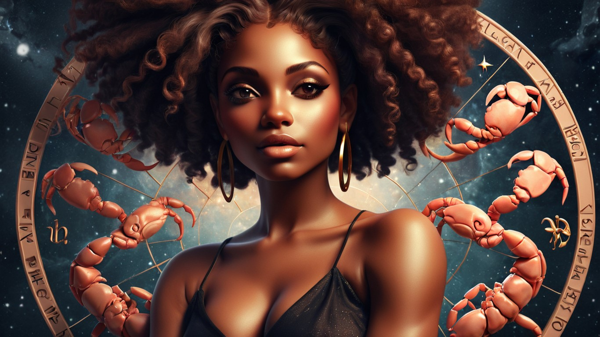
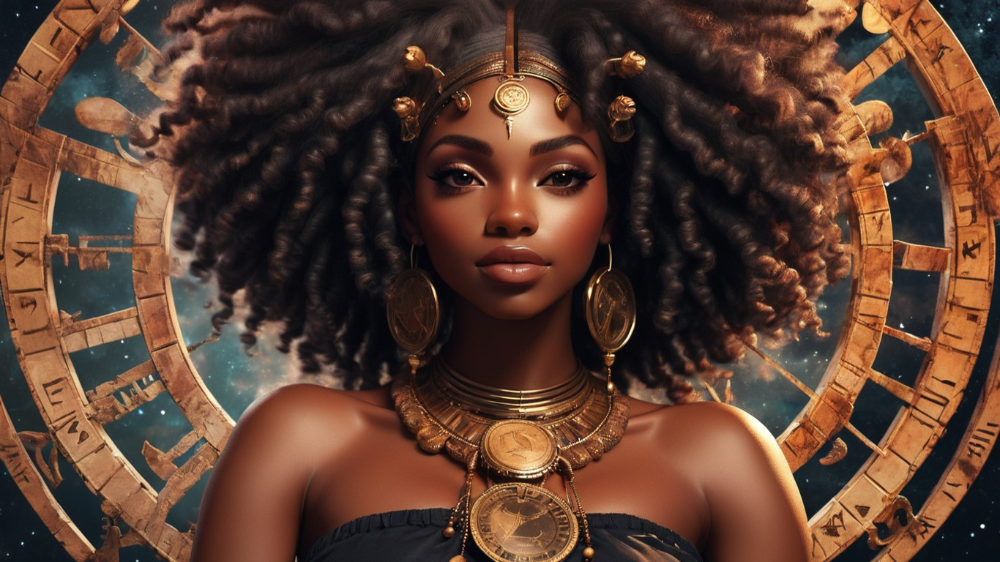

Second slide label
Some representative placeholder content for the second slide.

Second slide label
Some representative placeholder content for the second slide.

Second slide label
Some representative placeholder content for the second slide.
Card title
This is a wider card with supporting text below as a natural lead-in to additional content. This content is a little bit longer.
Last updated 3 mins ago